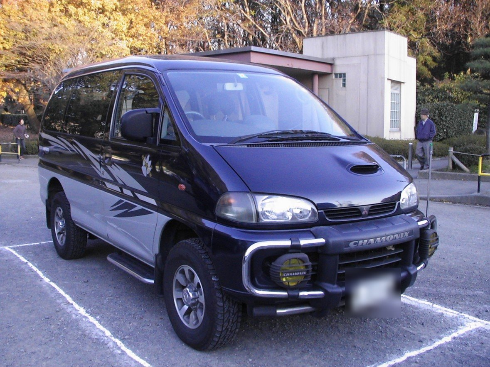
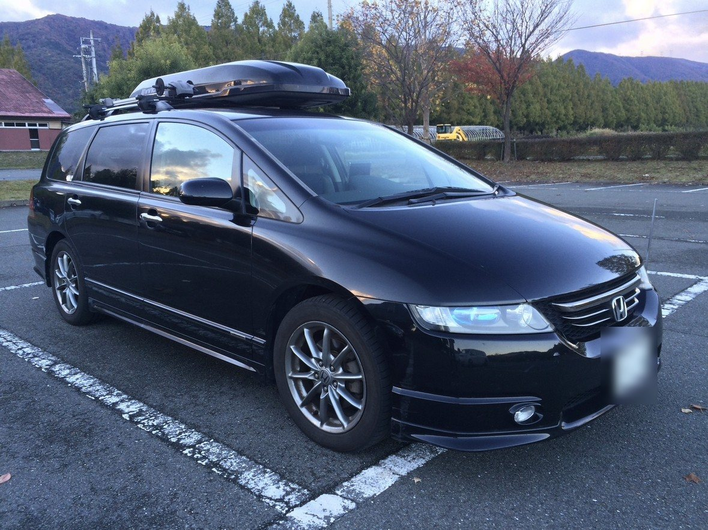
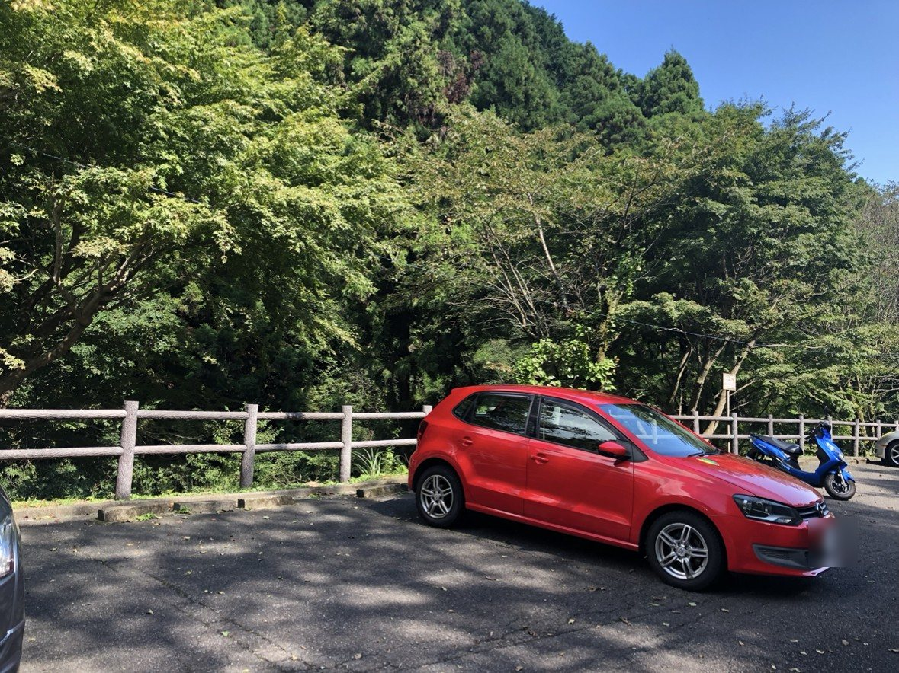
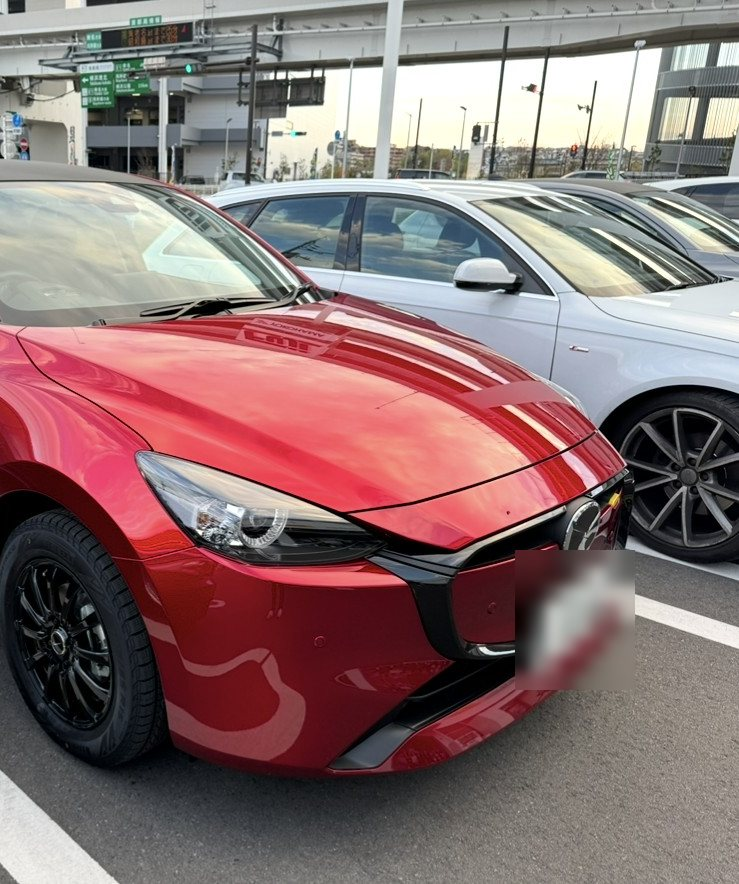
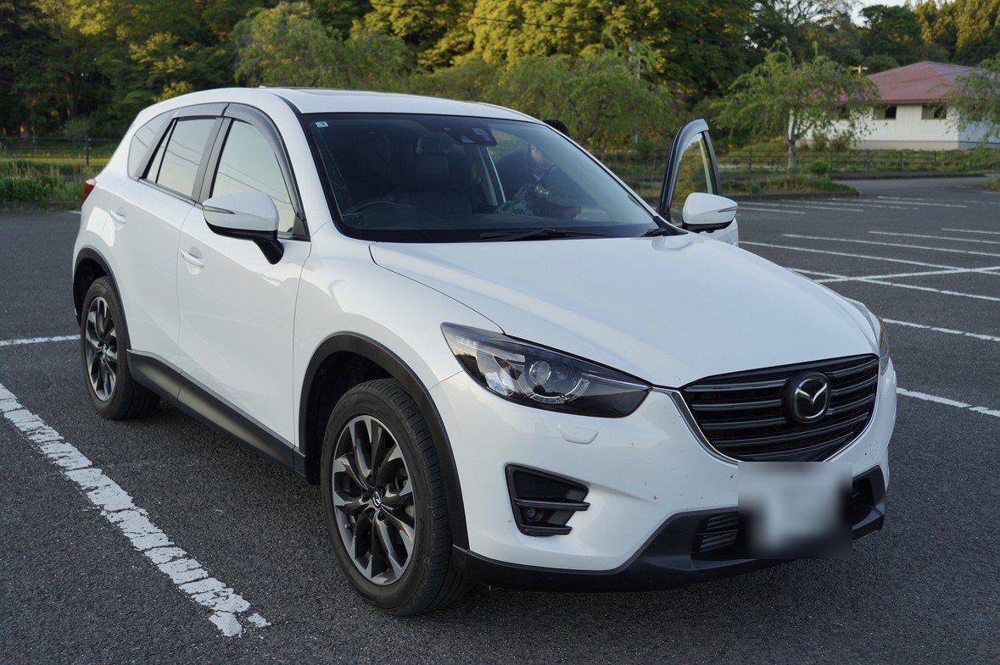

十八歳で最初のクルマに乗ってから、四十三年が過ぎた。そのあいだに僕は九台のクルマと暮らし、何人かの人と出会い、いくつかの町に住み、そのたびに少しずつ違う道を走った。
クルマのことを書こうとすると、どうしても、そのクルマに乗っていたころの自分のことを書くことになる。たぶんそれは仕方のないことなのだと思う。ここに並んでいるのは、九台のクルマの話であり、同時に、ひとりの男のささやかな年代記でもある。
トヨタ カリーナ
大学に入った年の、最初のクルマだった。銀色の2ドアハードトップ。ピラーのない窓を全部下ろすと、車内に風がそのまま通り抜けた。
あのころの僕には、行きたい場所がたくさんあって、そこへ行く理由はほとんどなかった。でもカリーナはそういうことを気にしなかった。ガソリンさえ入れれば、黙ってどこへでも連れていってくれた。社会人になる春、僕はそのクルマを手放した。青春というものに走行距離があるとしたら、たぶんあのメーターに刻まれていたのだと思う。
日産 マーチ
結婚した年、妻の父がプレゼントしてくれた青いマーチ。小さくて、まるくて、どこか照れくさそうな顔をしたクルマだった。
新しい家族ができるというのは、新しい親戚ができるということでもある。そのことを、僕はこのクルマの鍵を受け取ったときに、はじめてきちんと理解した気がする。ありがとうございます、と僕は言った。それ以上うまい言葉は、たぶん今でも見つかっていない。
スズキ キャリイ バン
マーチとほとんど同じころ、東京の郊外に住んでいた僕の家には、濃い緑色の軽バンもあった。荷物はいくらでも載ったし、乗り心地のことは誰も期待していなかった。
働くクルマというのは、正直なものだ。飾りがないぶん、こちらの気持ちもまっすぐになる。あのころの週末は、たいていこのバンの荷台の大きさで決まっていた。
三菱 デリカスペースギア シャモニ

大きなグリルガードと、ボンネットの上の空気取り入れ口。山にも海にも、どこへでも行けそうな顔をしたクルマだった。実際、僕らはこのクルマでずいぶんいろいろな場所へ行った。
後ろの席には、たいてい二匹のシェルティーが乗っていた。オスのチャンゴと、メスのキラン。窓を少し開けてやると、二匹は並んで鼻を突き出し、流れていく風の匂いを、まるで朝刊でも読むみたいに熱心に確かめていた。僕がハンドルを握り、犬たちが景色を読む。あのころのドライブは、だいたいそういう役割分担でできていた。
冬になると、スキー板を積んで雪山へ向かった。雪の積もった峠道も、デリカはいつもと同じ顔で、黙々と登っていった。やがて息子が生まれると、このクルマは家族の足になった。チャイルドシートと、二匹の犬と、山ほどの荷物。どれだけ載せても、デリカは文句ひとつ言わなかった。
十年乗った。そして、ディーゼル車の規制が厳しくなったことで、手放さなければならなくなった。機械はまだ元気だった。悪いのはクルマではなく、時代のほうだった。最後に鍵を返したときのことは、今でも少しだけ胸のどこかに引っかかっている。泣く泣く、という言葉は、たぶんああいうときのためにある。
ホンダ オデッセイ アブソリュート

黒くて、低くて、静かなミニバン。家族全員と、その全員の荷物と、ときどき余計なものまで、文句ひとつ言わずに運んでくれた。屋根の上のボックスには、たいてい何かが詰まっていた。
このクルマに乗っていた十一年のあいだに、息子は大きくなり、僕は会社を変わった。五十歳で転職して滋賀に単身赴任したとき、湖のそばの紅葉の中に、このクルマはぽつんと停まっていた。写真を見るたびに、あの秋の空気の冷たさを思い出す。
フォルクスワーゲン ポロ

僕が滋賀と芦屋で単身赴任をしているあいだ、横浜の家に残る妻のために選んだクルマ。小さくて、赤くて、きびきびしていた。
週末に帰ると、ガレージにこの赤いクルマが停まっている。それを見ると、ああ帰ってきたな、と思った。クルマにはときどき、人の代わりに留守を守るという仕事がある。ポロはその仕事を、八年間、ちゃんとやり遂げてくれた。
アウディ A4 アバント
オデッセイから乗り換えた、白いステーションワゴン。ドアを閉めたときの、低くて乾いた音が好きだ。高速道路に乗ると、このクルマは急に無口になり、ただまっすぐに前へ進んでいく。
メーターはもう十五万キロを越えた。地球を四周近く回った計算になる。フロントガラスが割れたことも、タイヤを何度か履き替えたこともある。そのたびに少しずつお金はかかったけれど、手放そうと思ったことは一度もない。落ち葉の積もった林道に停めてエンジンを切ると、聞こえるのは風の音だけになる。音のない時間というのも、たぶん音楽の一部なのだと思う。
マツダ MAZDA2

ソウルレッドという名前の赤は、光の角度によって、深い赤ワインのようにも、熟れた果物のようにも見える。久しぶりの新車だった。納車の日、ディーラーの駐車場で、僕はしばらくこの色を眺めていた。
二〇二六年の春、息子が家を出るとき、このクルマは息子と一緒に行くことになった。いまは遠い南の島を走っている。サトウキビ畑のあいだの道を、赤い小さなクルマが海に向かって走っていくところを、僕はときどき想像する。クルマにも、家族と同じように、巣立ちというものがあるのかもしれない。
マツダ CX-5

MAZDA2 が旅立った春に、我が家にやってきたクルマ。すでに十万キロを走ってきた、中古のディーゼルだ。デリカを手放してから二十年あまり、僕はふたたびディーゼルのクルマに乗ることになった。人生には、ときどきそういう巡り合わせがある。
家に来てすぐ、煤がつまるという大きなトラブルがあった。修理をして、部品を替えて、ようやく本来の調子を取り戻した。手のかかるクルマだ、と人は言うかもしれない。でも僕は、手がかかったぶんだけ、このクルマのことがよく分かるようになった気がしている。これから長い付き合いになるだろう。
いま、うちにいるクルマたち
- アウディ A4 アバント — 僕の相棒。15万kmを越えて、まだ現役
- マツダ CX-5 — 新しい家族。冬に向けてスタッドレスを準備中
- マツダ MAZDA2 — 南の島で、息子と暮らしている
四十三年で九台。数えてみると、それほど多くはない。どのクルマとも、できるだけ長く付き合ってきたからだと思う。新しいものに惹かれるくせに、いったん好きになると、なかなか手放せない。それはクルマに限らず、サックスでも、ヨットでも、たぶん人との付き合いでも同じなのだろう。